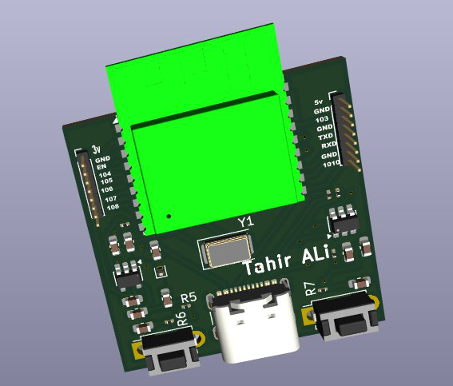
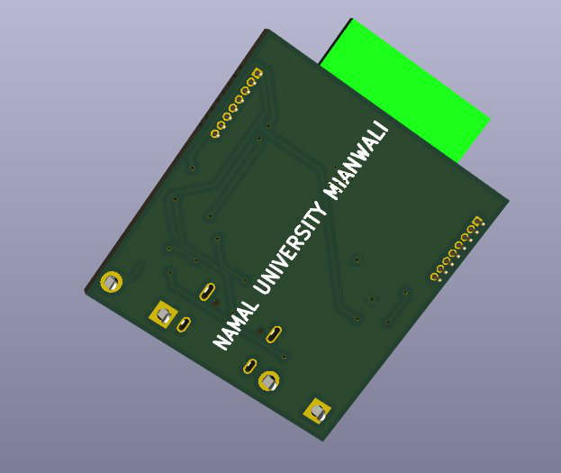
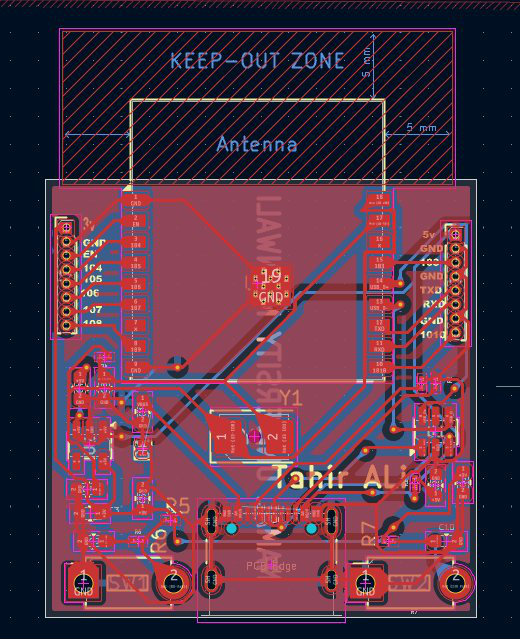
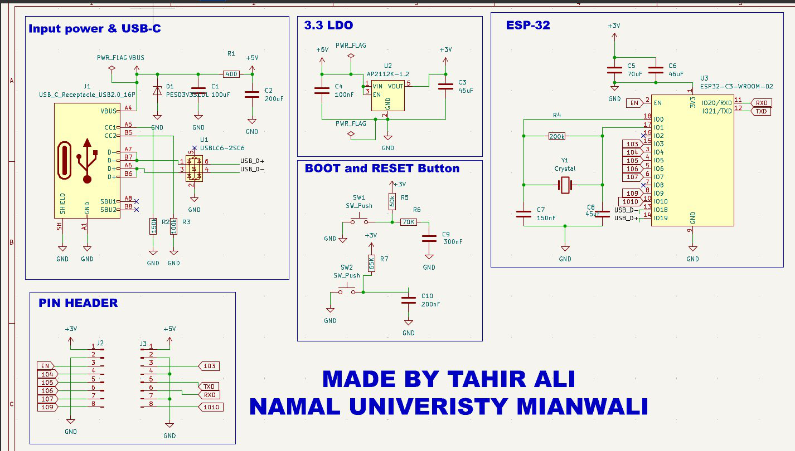

Custom ESP32 Development Board
2-Layer PCB · KiCad · ESP32-WROOM-32




Overview
A complete 2-layer development board built around the ESP32-WROOM-32 module, designed end-to-end in KiCad: schematic capture, footprint placement, routing, and a verified manufacturing output. The board takes USB Type-C for power and data, regulates down to 3.3V on-board, and exposes the module's core interfaces through a full GPIO header — built as a self-contained platform other firmware projects can be built on top of.
Boot and reset circuitry uses RC filtering to debounce the two push-buttons cleanly, and the ground plane was poured solid under the RF section to keep EMI down around the module's antenna.
Key Features
- USB Type-C input with ESD protection via USBLC6-2SC6
- Onboard 3.3V LDO regulation (AP2112K-1.2)
- Boot and reset push-buttons with RC-filtered debounce
- Solid ground plane poured for EMI reduction
- Dedicated RF antenna keep-out zone around the module
- UART, SPI, and I2C broken out across full GPIO headers
- Verified clean with DRC and ERC before fabrication